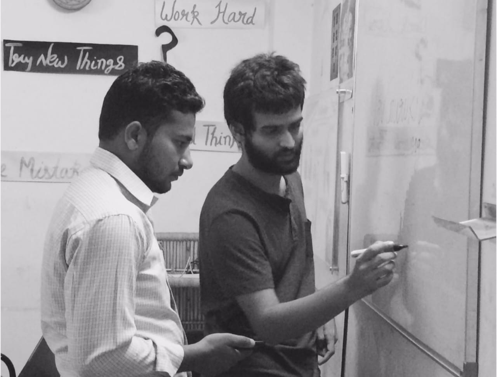

J68, Sarita Vihar, New Delhi - 110076
info@navgurukul.org
What is NavGurukul?
NavGurukul is a meaningful alternative to college education which educates youth for aspirational jobs like Software Engineering.
What makes NavGurukul unique?

- Intensive program at par with B.Tech (CS or IT) degree with better placements
- No upfront fees. Get a job and pay later in easy instalments
- One year residential program leading to high-growth careers
- Creating local problem solvers with the right tools & understanding